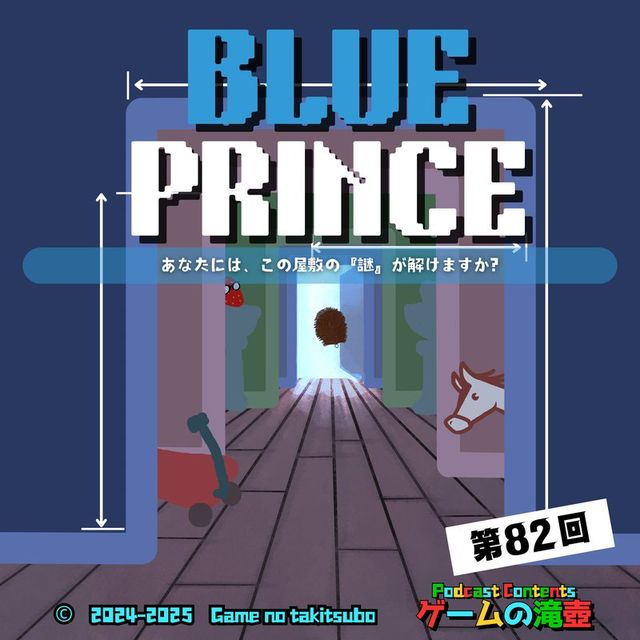
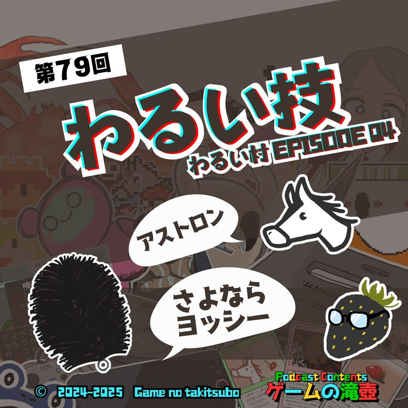
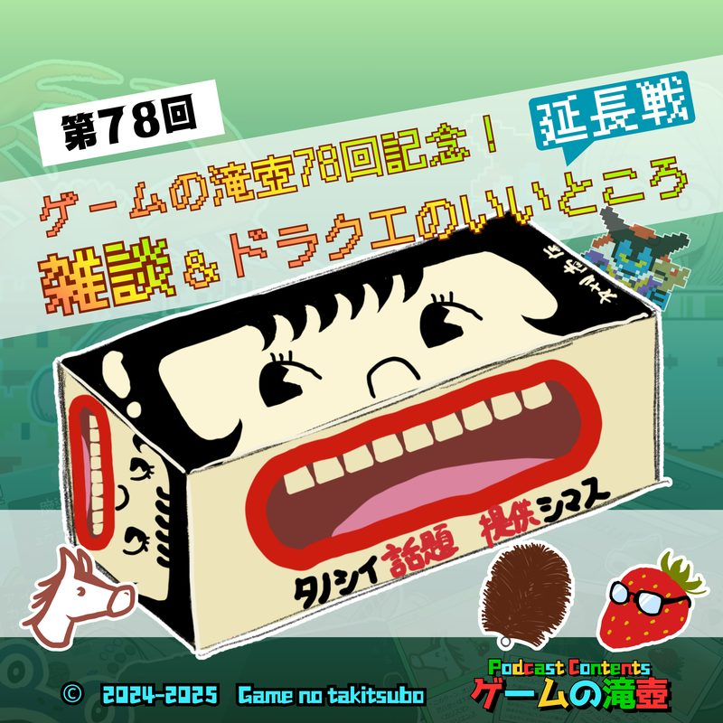
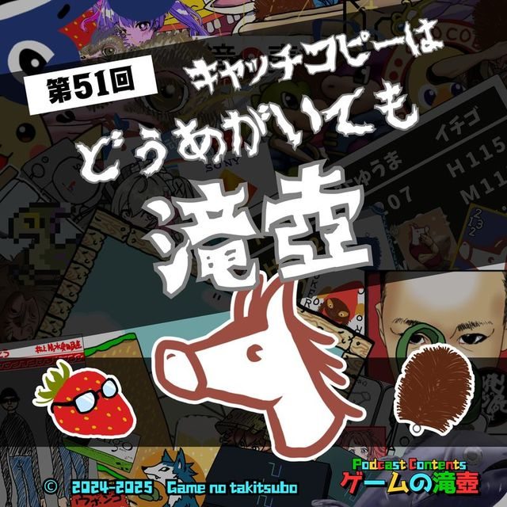
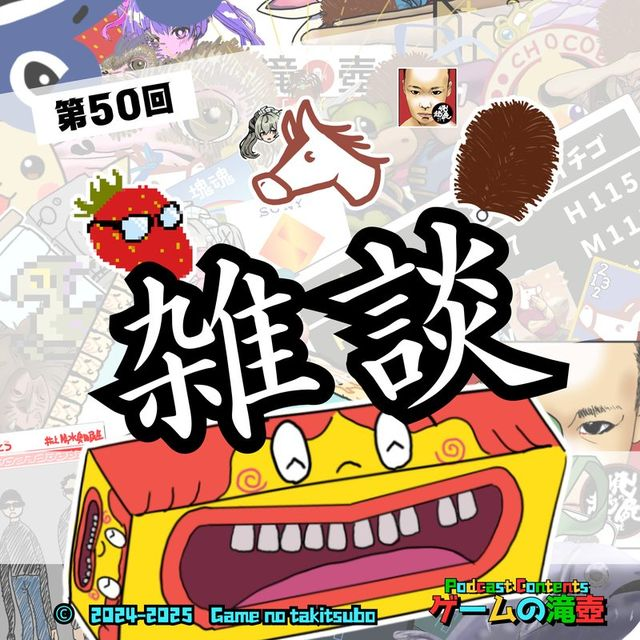
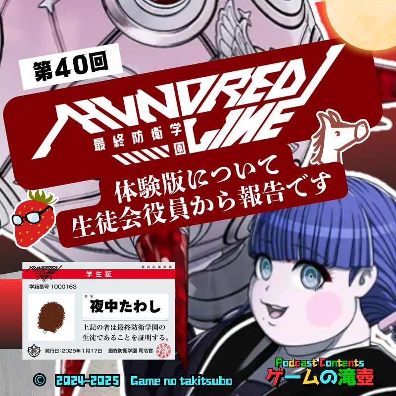
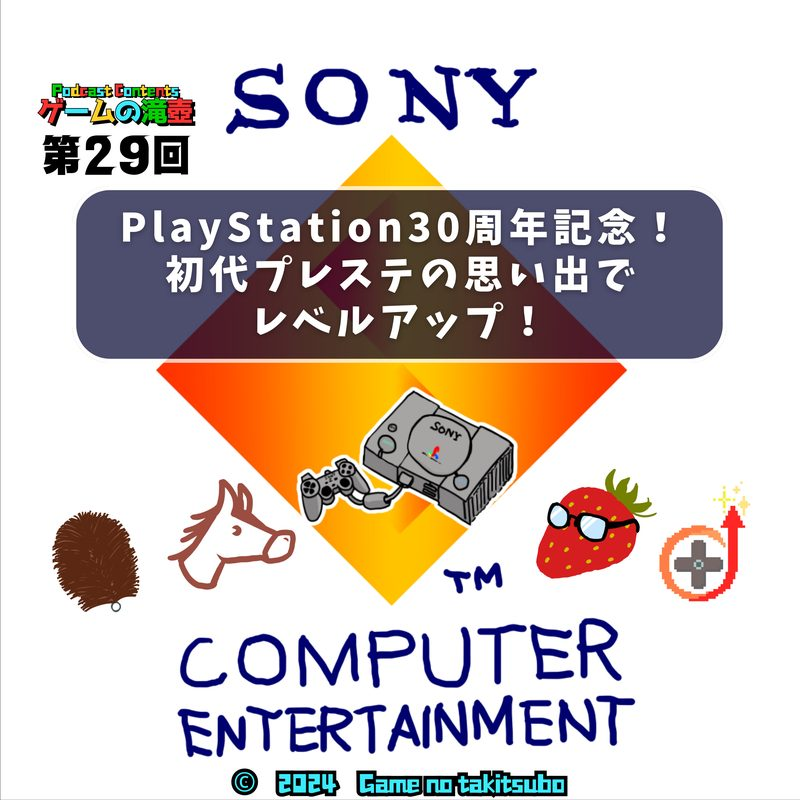

ファイナルファンタジーVII
ポッドキャスト「ゲームの滝壺」で「ファイナルファンタジーVII」が話題に出た回の一覧です。
滝壺での登場 14回コーナーやチャプターの話題として語られています。
 #1042026.05.06📑 チャプターで登場
PlayStation！ 初代プレステの売上ランキングTOP50について全部語る！ 3回目（最終回）
▶ 03:58〜 第2位 ファイナルファンタジーVII▶ 05:00〜 第3位 ファイナルファンタジーVIII初代プレステの売上ランキングTOP50について… ついに話し切りました！
#1042026.05.06📑 チャプターで登場
PlayStation！ 初代プレステの売上ランキングTOP50について全部語る！ 3回目（最終回）
▶ 03:58〜 第2位 ファイナルファンタジーVII▶ 05:00〜 第3位 ファイナルファンタジーVIII初代プレステの売上ランキングTOP50について… ついに話し切りました！
 #902026.01.28📑 チャプターで登場
PlayStation！ 初代プレステの売上ランキングTOP50について全部語る！ 2回目
▶ 04:26〜 第2位 ファイナルファンタジーVII▶ 06:34〜 第3位 ファイナルファンタジーVIII前回10位までしか話せなかったので、2回目の挑戦です！ やり直しなので当然、1位から見ていきます。当然です。
#902026.01.28📑 チャプターで登場
PlayStation！ 初代プレステの売上ランキングTOP50について全部語る！ 2回目
▶ 04:26〜 第2位 ファイナルファンタジーVII▶ 06:34〜 第3位 ファイナルファンタジーVIII前回10位までしか話せなかったので、2回目の挑戦です！ やり直しなので当然、1位から見ていきます。当然です。
 #802025.11.26📑 チャプターで登場
PlayStation！ 初代プレステの売上ランキングTOP50について全部語る！
▶ 09:01〜 第2位 ファイナルファンタジーVII▶ 16:41〜 第3位 ファイナルファンタジーVIIISFCに続いて、初代プレイステーションの売り上げランキングTOP50について全部語る！ 予定ですが、なかなか難しいものですね。
#802025.11.26📑 チャプターで登場
PlayStation！ 初代プレステの売上ランキングTOP50について全部語る！
▶ 09:01〜 第2位 ファイナルファンタジーVII▶ 16:41〜 第3位 ファイナルファンタジーVIIISFCに続いて、初代プレイステーションの売り上げランキングTOP50について全部語る！ 予定ですが、なかなか難しいものですね。
 #1002026.04.08💬 トーク内で登場
100点満点のゲーム！！
祝！ ゲームの滝壺100回記念！ リスナーのみなさんから投稿いただいた100点満点のゲームが大量に登場する、 いいゲームとエピソードばかりが次々出てくる夢のような回です！
#1002026.04.08💬 トーク内で登場
100点満点のゲーム！！
祝！ ゲームの滝壺100回記念！ リスナーのみなさんから投稿いただいた100点満点のゲームが大量に登場する、 いいゲームとエピソードばかりが次々出てくる夢のような回です！

#822025.12.10💬 トーク内で登場 Blue Prince「あなたには、この屋敷の『謎』が解けますか？」 途方もない謎解きゲームだと噂のブループリンス、その恐るべきゲームシステムに迫ります。 #812025.12.03💬 トーク内で登場
人の子よ… 年末年始に備えなさい… 親類 or 人類 と遊びたいパーティゲーム
年末年始に親類…そして人類と遊びたい、神、悪魔、クッパ軍団、ウイルスなどの方はぜひお聴きください！
#812025.12.03💬 トーク内で登場
人の子よ… 年末年始に備えなさい… 親類 or 人類 と遊びたいパーティゲーム
年末年始に親類…そして人類と遊びたい、神、悪魔、クッパ軍団、ウイルスなどの方はぜひお聴きください！

#792025.11.19💬 トーク内で登場 わるい技 ～わるい村 ep04～ 同時上映 Lumines Arise（ルミネス アライズ） わるい技には ご用心
#782025.11.12💬 トーク内で登場 ゲームの滝壺78回記念！ 雑談＆ドラクエのいいところ延長戦 今回はわけあって雑談… に加え、前回同様ドラクエのいいところについてもそこそこ話します！
#512025.05.14💬 トーク内で登場 キャッチコピーは「どうあがいても、滝壺」 ゲームのキャッチコピー全般について扱ったら、ひゅうまが張り切りすぎた回です！ ※某SIRENの話題は一切出ません
#502025.05.07💬 トーク内で登場 ゲームの滝壺50回記念！「雑談」 ガムトークを使って初の雑談回をしてみましたが… やはり昔のゲームの話題、多めです。
#402025.02.26💬 トーク内で登場 HUNDRED LINE -最終防衛学園-（ハンドレッドライン）体験版について生徒会役員から報告です HUNDRED LINE ─最終防衛学園─の体験版を遊んだ感想を、生徒会役員からお伝えします！ #392025.02.19💬 トーク内で登場
いいゲーム音楽を語る！ ～ひゅうまの書～ ロックマン、東方シリーズ、テイルズオブエターニア…
ひゅうまの選ぶいいゲーム音楽が、あなたの記憶を掘り起こします……
#392025.02.19💬 トーク内で登場
いいゲーム音楽を語る！ ～ひゅうまの書～ ロックマン、東方シリーズ、テイルズオブエターニア…
ひゅうまの選ぶいいゲーム音楽が、あなたの記憶を掘り起こします……
 #372025.02.05💬 トーク内で登場
いいゲーム音楽を語る！ ～イチィゴォーの巻～ 逆転裁判、クロノ・トリガー、てってってー…
今回はいいゲーム音楽がテーマ！ 当初3人それぞれのいい音楽を話す予定でしたが、結果はタイトルのとおりです。 ゲーム音楽絡みで新コーナーも始まります！ リスナー参加型なので、ぜひおたよりをお寄せください。
#372025.02.05💬 トーク内で登場
いいゲーム音楽を語る！ ～イチィゴォーの巻～ 逆転裁判、クロノ・トリガー、てってってー…
今回はいいゲーム音楽がテーマ！ 当初3人それぞれのいい音楽を話す予定でしたが、結果はタイトルのとおりです。 ゲーム音楽絡みで新コーナーも始まります！ リスナー参加型なので、ぜひおたよりをお寄せください。

#292024.12.11💬 トーク内で登場 PlayStation30周年記念！ 初代プレステの思い出でレベルアップ！（ゲスト：YUSUKEさん） PlayStation30周年記念！ 初代プレイステーションの思い出を、ゲームライフレベルアップのYUSUKEさんを招いて語らいます。SAME SERIES同シリーズのタイトル
TALKED TOGETHER同じ回で話題に出たタイトル
🎧 ▶付きの時刻を押すと、その話題の頭からその場で再生できます。
「ファイナルファンタジーVII」の話がもっと聴きたくなったら、おたよりでリクエストしてもらえると番組が喜びます。